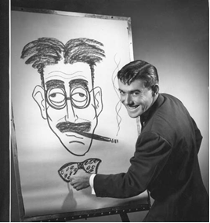
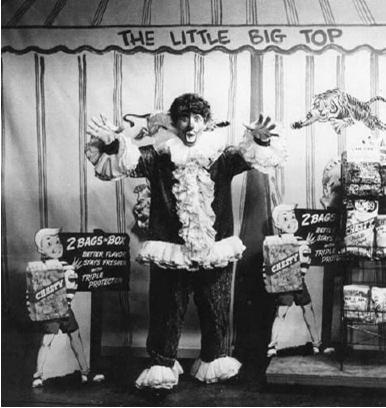

Bill Plater - Man of Many Costumes
Bill Plater.....a true artist (in many ways!)
Bill Plater was yet another WSIL employee who wore many hats. Or should I say, costumes??
Bill, a graduate of SIU Carbondale with majors in art and journalism, headed right for “big-city” life and headed for St. Louis Missouri in the early 50’s to work as a staff artist and feature writer for the St. Louis Globe Democrat. However, being a small-town boy at heart, he was not happy with city living. While visiting his parents in his hometown of Vienna, Illinois one weekend, Bill happened to read the local paper. An ad announcing the opening of WSIL-TV in Harrisburg caught his eye, and he quickly drove to the new studio, still under construction at the time. Upon his arrival, he ran into Jim Bolen, already working in many capactities at the new station. Although not well acquainted, both men recognized one another from their days at SIU and began talking.
At the time, television studios had very few ways of getting visual material on the air, other than a live camera. There were 16mm films and 35mm slides. The lettering and artwork had to be copied onto the slides and was handled by an art director. When Jim Bolen told the owners of the new station about Bill Plater’s background and talent, he was hired on the spot.
Bill’s memories of the early days of WSIL are priceless and entertaining. He recalls the long hours put in each day, and mentions going to Jim Bolen’s house after that long workday to plan, critique, and watch Steve Allens late night talk-show coming from a “big” television station in Indianapolis.
Later, when Jim Bolen decided to move to Iowa, Bill Plater went from a“behind the scenes” employee right into the limelight…..
Jim Bolen had created a character called “Cactus Pete” at another television station in Ohio, and brought this character to WSIL. Cactus was on the air almost as soon as WSIL signed on in December of 1953. Cactus would introduce westerns on a show called “Bar 22 Ranch”, named for the stations channel at the time. Cactus later hosted more of a kiddie show, offering jokes, chit chat, and commercials between cartoons and short movies. The show became so popular, the owners of the station wanted to show to go on….so, as luck would have it, Bill Plater was ready and willing to step into the role Bolen left. In his own words, “I was the only one who could wear Jim’s hat size”. Bill became Cactus Pete, in addition to his duties as art director for the station….already a time consuming and tedious job.
The sponsor of the show was Dairy Brand Milk, a Harrisburg based dairy. Since the Cactus Pete show was so popular with kids, Dairy Brand watched their sales go up, eventually expanding their business into a regional operation.
Cactus Pete was advised to drink the milk….to show kids watching how good it was. However, not only was it difficult to drink milk through a fake beard…. it was also a drink Bill Plater himself was not fond of. So, the drinking of the milk was faked, and was later worked into a gag starring Cactus Pete and……a flea. An imaginary flea named Elmer, to be exact. Elmer, a character originated by Bill, lived in Cactus Pete’s beard and would sit on the rim of a magicians “milk glass”…..the type of glass the makes the contents disappear magically. When the camera came in for a close-up, Elmer would drink the milk while a slurping noise was provided off camera. This was a gag that was used for several years……boosting sales and also providing Bill with an excuse not to drink the milk. “This trick glass, costing about two dollars, was worth a million for all the show material it provided.”
Dairy Brand had started something called the “tin cup” promotion, even while Jim Bolen played the Cactus character. This promotion continued after Bill took over the role. Kids could drink their milk from their own tin cup while Cactus drank it on the air. The cups were “signed” by Cactus himself (actually by folks at Dairy Brand with an engraving tool.) Thousands of cups were mailed out to viewers who sent in a tab off a milk carton and 25 cents. Today, these cups are worth a bit of money in antique stores around the area.
Needless to say, most of the staff of WSIL during the early days were “stressed”. There was a lot to do, deadlines to meet, and everything on camera was done live. Bill Plater was one of those staff members who was stretched to the limit…..
Bill hosted another kiddie show “Ruffles the Clown” immediately before the Cactus Pete show. This show featured antics of a clown, named after one of the potato chips offered by the Chesty Potato Chip company which sponsored the show. Carl Reynolds, who later appeared on the Cactus Pete show remembers being in the audience of the “Ruffles” show. The producer gave some timely advice to the children in the audience…..”Just let the clown do the show”. As the Cactus show quickly followed “Ruffles”, Bill Plater found himself becoming a quick change artist. The change from a clown to a bearded old man was pulled off by pulling off the nose and wig…. putting on the Cactus wig, glasses and hat. The beard covered the clown makeup and the clown suit was dropped to Bill’s ankles, out of sight behind the “General Store” style counter featured at the opening of the Cactus Show. A checkered shirt and vest were quickly put on, and the Cactus show began.
Bill also “stuck around” to open the “Family Playhouse” show following the late news. The show, which featured movies on 16mm film, would be opened with Bill drawing a caricature of one of the movie’s stars on a giant drawing board. His drawing ability was also featured in a Saturday morning kids show called”Cartoon Man”, later called “It’s Fun to Draw”. To top it all off, Bill emceed a daily five-o’clock show called “Studio Show” with Jerry Reuter and Helen Asbell (the show's organist). This show was a “potpourri” style show with special features of local interest that could be put on camera to fill time.
In addition to his on-camera duties, art direction, and behind the scenes work, Bill also found time to travel around the area with an entertaining show featuring his quick-drawing ability and comedic talent.
In order to relieve a little stress from time to time, Bill would join friends at the American Legion, just a block from the back door of the station. He prided himself on being able to leave his friends at the last possible minute, usually 5:58, run to the studio and be on set in full Cactus costume by 6:00. There were often “bets” at the Legion among the friends. They would wager newcomers as to whether Bill would make it to the studio and on set in time. The television at the Legion would be on as they watched. There was Bill…..at 6:00, as usual. He recalls bursting through the Legion door with one minute and forty seconds to spare one evening and finding bumper to bumper traffic along Main Street. Needless to say, his perfect record was shot that evening and he was late getting on the air.
After being in the television business for almost twenty years, Bill
became a partner in a radio station ownership in the early 70's. He also hosted a radio program as his old alter ego “Cactus Pete”, but it lasted only about a year. “The show was only mildly received and wasn’t worth getting up early for”, says Bill. After selling his radio partnership, he opened a printing business in Harrisburg. He also owned a trophy/sign business in Marion, Illinois.
Now retired, Bill and his wife Susan enjoy tooling around on their Hondas on warm days. They have one son and one daughter.
Many remember Bill Plater from his WSIL days. No doubt, much of southern Illinois grew up watching Bill in his various appearances on channel 3. He contributed much to the early beginnings of WSIL……we are glad to have been able to watch his talent and abilities over the years.
Thanks, Bill.
Again, I must say that Bill Plater is responsible for a large part of this website. I have gained much from his articles in Springhouse magazine, his many emails, and from the pictures he has sent me. Again, thanks!
